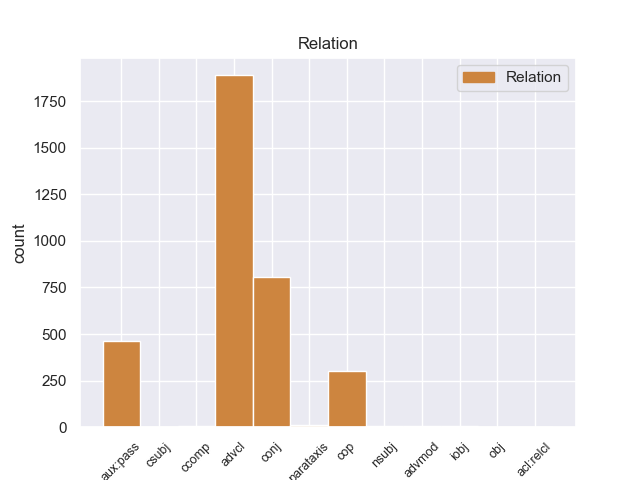
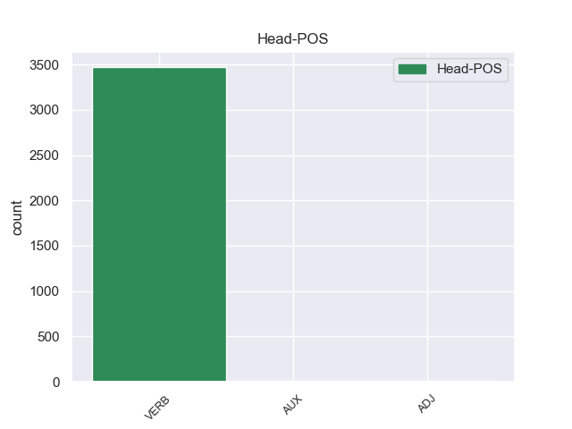
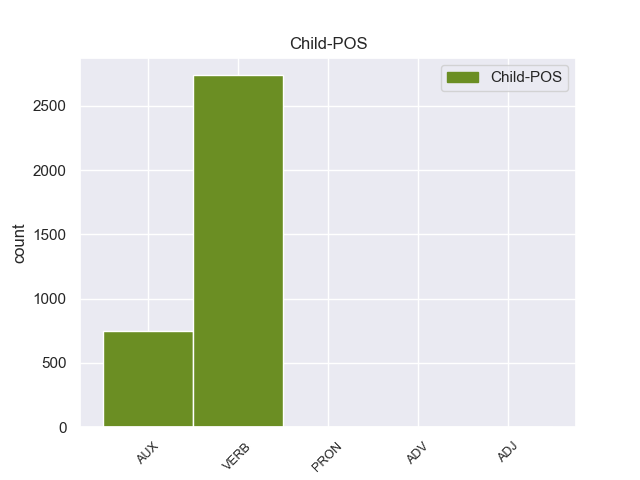

Distribution of features within this leaf



Agreement Rules sorted by frequency.
- When the dependent token is the adverbial clause modifier(advcl) of the head token, and the dependent token is VERB.
1 De _ _ _ _ 0 _ _ _
2 los _ _ _ _ 0 _ _ _
3 714 _ _ _ _ 0 _ _ _
4 habitantes _ _ _ _ 0 _ _ _
5 , _ _ _ _ 0 _ _ _
6 el _ _ _ _ 0 _ _ _
7 municipio _ _ _ _ 0 _ _ _
8 de _ _ _ _ 0 _ _ _
9 Daggett _ _ _ _ 0 _ _ _
10 estaba _ _ _ _ 0 _ _ _
11 compuesto _ _ _ _ 0 _ _ _
12 por _ _ _ _ 0 _ _ _
13 el _ _ _ _ 0 _ _ _
14 93.28 _ _ _ _ 0 _ _ _
15 % _ _ _ _ 0 _ _ _
16 blancos _ _ _ _ 0 _ _ _
17 , _ _ _ _ 0 _ _ _
18 el _ _ _ _ 0 _ _ _
19 2.38 _ _ _ _ 0 _ _ _
20 % _ _ _ _ 0 _ _ _
21 eran _ _ _ _ 0 _ _ _
22 afroamericanos _ _ _ _ 0 _ _ _
23 , _ _ _ _ 0 _ _ _
24 el _ _ _ _ 0 _ _ _
25 0.84 _ _ _ _ 0 _ _ _
26 % _ _ _ _ 0 _ _ _
27 eran _ _ _ _ 0 _ _ _
28 amerindios _ _ _ _ 0 _ _ _
29 , _ _ _ _ 0 _ _ _
30 el _ _ _ _ 0 _ _ _
31 0.56 _ _ _ _ 0 _ _ _
32 % _ _ _ _ 0 _ _ _
33 eran _ _ _ _ 0 _ _ _
34 asiáticos _ _ _ _ 0 _ _ _
35 , _ _ _ _ 0 _ _ _
36 el _ _ _ _ 0 _ _ _
37 0 _ _ _ _ 0 _ _ _
38 % _ _ _ _ 0 _ _ _
39 eran _ _ _ _ 0 _ _ _
40 isleños _ _ _ _ 0 _ _ _
41 de _ _ _ _ 0 _ _ _
42 el _ _ _ _ 0 _ _ _
43 Pacífico _ _ _ _ 0 _ _ _
44 , _ _ _ _ 0 _ _ _
45 el _ _ _ _ 0 _ _ _
46 0.84 _ _ _ _ 0 _ _ _
47 % _ _ _ _ 0 _ _ _
48 eran eer VERB _ Mood=Ind|Number=Plur|Person=3|Tense=Imp|VerbForm=Fin 0 _ _ _
49 de _ _ _ _ 0 _ _ _
50 otras _ _ _ _ 0 _ _ _
51 razas _ _ _ _ 0 _ _ _
52 y _ _ _ _ 0 _ _ _
53 el _ _ _ _ 0 _ _ _
54 2.1 _ _ _ _ 0 _ _ _
55 % _ _ _ _ 0 _ _ _
56 pertenecían pertenecer VERB _ Mood=Ind|Number=Plur|Person=3|Tense=Imp|VerbForm=Fin 48 advcl _ _
57 a _ _ _ _ 0 _ _ _
58 dos _ _ _ _ 0 _ _ _
59 o _ _ _ _ 0 _ _ _
60 más _ _ _ _ 0 _ _ _
61 razas _ _ _ _ 0 _ _ _
62 . _ _ _ _ 0 _ _ _
1 Una _ _ _ _ 0 _ _ _
2 vez _ _ _ _ 0 _ _ _
3 que _ _ _ _ 0 _ _ _
4 el _ _ _ _ 0 _ _ _
5 Hijo _ _ _ _ 0 _ _ _
6 de _ _ _ _ 0 _ _ _
7 Krypton _ _ _ _ 0 _ _ _
8 suelta suelta VERB _ Mood=Ind|Number=Sing|Person=3|Tense=Pres|VerbForm=Fin 0 _ _ _
9 el _ _ _ _ 0 _ _ _
10 misil _ _ _ _ 0 _ _ _
11 , _ _ _ _ 0 _ _ _
12 este _ _ _ _ 0 _ _ _
13 intenta intentar VERB _ Mood=Ind|Number=Sing|Person=3|Tense=Pres|VerbForm=Fin 8 conj _ _
14 huir _ _ _ _ 0 _ _ _
15 de _ _ _ _ 0 _ _ _
16 el _ _ _ _ 0 _ _ _
17 lugar _ _ _ _ 0 _ _ _
18 pero _ _ _ _ 0 _ _ _
19 es _ _ _ _ 0 _ _ _
20 atrapado _ _ _ _ 0 _ _ _
21 en _ _ _ _ 0 _ _ _
22 la _ _ _ _ 0 _ _ _
23 explosión _ _ _ _ 0 _ _ _
24 . _ _ _ _ 0 _ _ _
1 También _ _ _ _ 0 _ _ _
2 fue ser AUX _ Mood=Ind|Number=Sing|Person=3|Tense=Past|VerbForm=Fin 3 aux:pass _ _
3 presentado presentado VERB _ Gender=Masc|Number=Sing|Tense=Past|VerbForm=Part 0 _ _ _
4 el _ _ _ _ 0 _ _ _
5 Mila _ _ _ _ 0 _ _ _
6 2 _ _ _ _ 0 _ _ _
7 , _ _ _ _ 0 _ _ _
8 una _ _ _ _ 0 _ _ _
9 versión _ _ _ _ 0 _ _ _
10 de _ _ _ _ 0 _ _ _
11 dos _ _ _ _ 0 _ _ _
12 plazas _ _ _ _ 0 _ _ _
13 . _ _ _ _ 0 _ _ _
1 También _ _ _ _ 0 _ _ _
2 es ser AUX _ Mood=Ind|Number=Sing|Person=3|Tense=Pres|VerbForm=Fin 3 cop _ _
3 importante importante VERB _ Mood=Ind|Number=Sing|Person=3|Tense=Pres|VerbForm=Fin 0 _ _ _
4 identificar _ _ _ _ 0 _ _ _
5 aquellas _ _ _ _ 0 _ _ _
6 actividades _ _ _ _ 0 _ _ _
7 capaces _ _ _ _ 0 _ _ _
8 de _ _ _ _ 0 _ _ _
9 aumentar _ _ _ _ 0 _ _ _
10 el _ _ _ _ 0 _ _ _
11 potencial _ _ _ _ 0 _ _ _
12 para _ _ _ _ 0 _ _ _
13 eventos _ _ _ _ 0 _ _ _
14 extremos _ _ _ _ 0 _ _ _
15 . _ _ _ _ 0 _ _ _
1 Fuerón fuerón VERB _ Mood=Ind|Number=Sing|Person=3|Tense=Past|VerbForm=Fin 2 cop _ _
2 propuestos propuestos VERB _ Mood=Ind|Number=Sing|Person=3|Tense=Past|VerbForm=Fin 0 _ _ _
3 tres _ _ _ _ 0 _ _ _
4 candidatos _ _ _ _ 0 _ _ _
5 . _ _ _ _ 0 _ _ _
1 Las _ _ _ _ 0 _ _ _
2 licencias _ _ _ _ 0 _ _ _
3 se _ _ _ _ 0 _ _ _
4 adquirieron adquirieroar VERB _ Mood=Ind|Number=Sing|Person=3|Tense=Past|VerbForm=Fin 0 _ _ _
5 para _ _ _ _ 0 _ _ _
6 el _ _ _ _ 0 _ _ _
7 S _ _ _ _ 0 _ _ _
8 - _ _ _ _ 0 _ _ _
9 55 _ _ _ _ 0 _ _ _
10 y _ _ _ _ 0 _ _ _
11 el _ _ _ _ 0 _ _ _
12 S _ _ _ _ 0 _ _ _
13 - _ _ _ _ 0 _ _ _
14 56 _ _ _ _ 0 _ _ _
15 y _ _ _ _ 0 _ _ _
16 ambos _ _ _ _ 0 _ _ _
17 fueron _ _ _ _ 0 _ _ _
18 probados _ _ _ _ 0 _ _ _
19 en _ _ _ _ 0 _ _ _
20 un _ _ _ _ 0 _ _ _
21 área _ _ _ _ 0 _ _ _
22 llamada _ _ _ _ 0 _ _ _
23 Miller _ _ _ _ 0 _ _ _
24 Army _ _ _ _ 0 _ _ _
25 Air _ _ _ _ 0 _ _ _
26 Field _ _ _ _ 0 _ _ _
27 , _ _ _ _ 0 _ _ _
28 pero _ _ _ _ 0 _ _ _
29 sólo _ _ _ _ 0 _ _ _
30 el _ _ _ _ 0 _ _ _
31 S _ _ _ _ 0 _ _ _
32 - _ _ _ _ 0 _ _ _
33 56 _ _ _ _ 0 _ _ _
34 llegó llegór VERB _ Mood=Ind|Number=Sing|Person=3|Tense=Past|VerbForm=Fin 4 parataxis _ _
35 a _ _ _ _ 0 _ _ _
36 producir _ _ _ _ 0 _ _ _
37 se _ _ _ _ 0 _ _ _
38 . _ _ _ _ 0 _ _ _
1 Algunos _ _ _ _ 0 _ _ _
2 historiadores _ _ _ _ 0 _ _ _
3 españoles _ _ _ _ 0 _ _ _
4 como _ _ _ _ 0 _ _ _
5 Jerónimo _ _ _ _ 0 _ _ _
6 Bécker _ _ _ _ 0 _ _ _
7 , _ _ _ _ 0 _ _ _
8 consideran consideranr VERB _ Mood=Ind|Number=Sing|Person=3|Tense=Pres|VerbForm=Fin 0 _ _ _
9 que _ _ _ _ 0 _ _ _
10 es _ _ _ _ 0 _ _ _
11 posible posible VERB _ Mood=Ind|Number=Sing|Person=3|Tense=Pres|VerbForm=Fin 8 ccomp _ _
12 que _ _ _ _ 0 _ _ _
13 se _ _ _ _ 0 _ _ _
14 trate _ _ _ _ 0 _ _ _
15 de _ _ _ _ 0 _ _ _
16 una _ _ _ _ 0 _ _ _
17 falsificación _ _ _ _ 0 _ _ _
18 , _ _ _ _ 0 _ _ _
19 mientras _ _ _ _ 0 _ _ _
20 que _ _ _ _ 0 _ _ _
21 la _ _ _ _ 0 _ _ _
22 historiografía _ _ _ _ 0 _ _ _
23 no _ _ _ _ 0 _ _ _
24 española _ _ _ _ 0 _ _ _
25 da _ _ _ _ 0 _ _ _
26 por _ _ _ _ 0 _ _ _
27 seguro _ _ _ _ 0 _ _ _
28 la _ _ _ _ 0 _ _ _
29 falsificación _ _ _ _ 0 _ _ _
30 . _ _ _ _ 0 _ _ _
1 Eigenmann _ _ _ _ 0 _ _ _
2 se _ _ _ _ 0 _ _ _
3 graduó graduó VERB _ Mood=Ind|Number=Sing|Person=3|Tense=Past|VerbForm=Fin 0 _ _ _
4 como _ _ _ _ 0 _ _ _
5 Licenciado _ _ _ _ 0 _ _ _
6 en _ _ _ _ 0 _ _ _
7 1886 _ _ _ _ 0 _ _ _
8 y _ _ _ _ 0 _ _ _
9 poco _ _ _ _ 0 _ _ _
10 después _ _ _ _ 0 _ _ _
11 fue ser AUX _ Mood=Ind|Number=Sing|Person=3|Tense=Past|VerbForm=Fin 3 conj _ _
12 a _ _ _ _ 0 _ _ _
13 vivir _ _ _ _ 0 _ _ _
14 a _ _ _ _ 0 _ _ _
15 California _ _ _ _ 0 _ _ _
16 , _ _ _ _ 0 _ _ _
17 donde _ _ _ _ 0 _ _ _
18 conoció _ _ _ _ 0 _ _ _
19 a _ _ _ _ 0 _ _ _
20 Rosa _ _ _ _ 0 _ _ _
21 Smith _ _ _ _ 0 _ _ _
22 , _ _ _ _ 0 _ _ _
23 conocida _ _ _ _ 0 _ _ _
24 por _ _ _ _ 0 _ _ _
25 sus _ _ _ _ 0 _ _ _
26 trabajos _ _ _ _ 0 _ _ _
27 sobre _ _ _ _ 0 _ _ _
28 los _ _ _ _ 0 _ _ _
29 peces _ _ _ _ 0 _ _ _
30 de _ _ _ _ 0 _ _ _
31 la _ _ _ _ 0 _ _ _
32 costa _ _ _ _ 0 _ _ _
33 oeste _ _ _ _ 0 _ _ _
34 . _ _ _ _ 0 _ _ _
1 Neymar _ _ _ _ 0 _ _ _
2 dijo decir VERB _ Mood=Ind|Number=Sing|Person=3|Tense=Past|VerbForm=Fin 0 _ _ _
3 que _ _ _ _ 0 _ _ _
4 la _ _ _ _ 0 _ _ _
5 rabieta _ _ _ _ 0 _ _ _
6 en _ _ _ _ 0 _ _ _
7 la _ _ _ _ 0 _ _ _
8 cancha _ _ _ _ 0 _ _ _
9 fue ser AUX _ Mood=Ind|Number=Sing|Person=3|Tense=Past|VerbForm=Fin 2 advcl _ _
10 de _ _ _ _ 0 _ _ _
11 alguien _ _ _ _ 0 _ _ _
12 " _ _ _ _ 0 _ _ _
13 que _ _ _ _ 0 _ _ _
14 siempre _ _ _ _ 0 _ _ _
15 quiere _ _ _ _ 0 _ _ _
16 ganar _ _ _ _ 0 _ _ _
17 " _ _ _ _ 0 _ _ _
18 . _ _ _ _ 0 _ _ _
1 El _ _ _ _ 0 _ _ _
2 8 _ _ _ _ 0 _ _ _
3 ° _ _ _ _ 0 _ _ _
4 congreso _ _ _ _ 0 _ _ _
5 tuvo tener VERB _ Mood=Ind|Number=Sing|Person=3|Tense=Past|VerbForm=Fin 6 aux:pass _ _
6 lugar lugar VERB _ Mood=Ind|Number=Sing|Person=3|Tense=Past|VerbForm=Fin 0 _ _ _
7 en _ _ _ _ 0 _ _ _
8 Estambul _ _ _ _ 0 _ _ _
9 en _ _ _ _ 0 _ _ _
10 2007 _ _ _ _ 0 _ _ _
11 , _ _ _ _ 0 _ _ _
12 el _ _ _ _ 0 _ _ _
13 9 _ _ _ _ 0 _ _ _
14 ° _ _ _ _ 0 _ _ _
15 congreso _ _ _ _ 0 _ _ _
16 se _ _ _ _ 0 _ _ _
17 realizó _ _ _ _ 0 _ _ _
18 en _ _ _ _ 0 _ _ _
19 Venecia _ _ _ _ 0 _ _ _
20 en _ _ _ _ 0 _ _ _
21 2010 _ _ _ _ 0 _ _ _
22 , _ _ _ _ 0 _ _ _
23 y _ _ _ _ 0 _ _ _
24 el _ _ _ _ 0 _ _ _
25 10 _ _ _ _ 0 _ _ _
26 ° _ _ _ _ 0 _ _ _
27 en _ _ _ _ 0 _ _ _
28 Buenos _ _ _ _ 0 _ _ _
29 Aires _ _ _ _ 0 _ _ _
30 en _ _ _ _ 0 _ _ _
31 2012 _ _ _ _ 0 _ _ _
32 ( _ _ _ _ 0 _ _ _
33 http://www.aisv2012.org _ _ _ _ 0 _ _ _
34 ) _ _ _ _ 0 _ _ _
35 . _ _ _ _ 0 _ _ _
1 Por _ _ _ _ 0 _ _ _
2 último _ _ _ _ 0 _ _ _
3 , _ _ _ _ 0 _ _ _
4 los _ _ _ _ 0 _ _ _
5 vecinos _ _ _ _ 0 _ _ _
6 señalaron señalaron VERB _ Mood=Ind|Number=Sing|Person=3|Tense=Past|VerbForm=Fin 0 _ _ _
7 que _ _ _ _ 0 _ _ _
8 es _ _ _ _ 0 _ _ _
9 necesario necesario VERB _ Gender=Masc|Number=Sing|Tense=Past|VerbForm=Part 6 advmod _ _
10 ensanchar _ _ _ _ 0 _ _ _
11 y _ _ _ _ 0 _ _ _
12 despejar _ _ _ _ 0 _ _ _
13 el _ _ _ _ 0 _ _ _
14 camino _ _ _ _ 0 _ _ _
15 hacia _ _ _ _ 0 _ _ _
16 Arroyo _ _ _ _ 0 _ _ _
17 El _ _ _ _ 0 _ _ _
18 Gato _ _ _ _ 0 _ _ _
19 . _ _ _ _ 0 _ _ _
1 Cuando _ _ _ _ 0 _ _ _
2 fuman _ _ _ _ 0 _ _ _
3 su _ _ _ _ 0 _ _ _
4 primer _ _ _ _ 0 _ _ _
5 porro _ _ _ _ 0 _ _ _
6 de _ _ _ _ 0 _ _ _
7 dicha _ _ _ _ 0 _ _ _
8 planta _ _ _ _ 0 _ _ _
9 , _ _ _ _ 0 _ _ _
10 se _ _ _ _ 0 _ _ _
11 les él PRON _ Mood=Ind|Number=Plur|Person=3|Tense=Pres|VerbForm=Fin 12 iobj _ _
12 aparece aparecer VERB _ Mood=Ind|Number=Sing|Person=3|Tense=Pres|VerbForm=Fin 0 _ _ _
13 el _ _ _ _ 0 _ _ _
14 fantasma _ _ _ _ 0 _ _ _
15 de _ _ _ _ 0 _ _ _
16 Ivory _ _ _ _ 0 _ _ _
17 , _ _ _ _ 0 _ _ _
18 que _ _ _ _ 0 _ _ _
19 les _ _ _ _ 0 _ _ _
20 ayuda _ _ _ _ 0 _ _ _
21 en _ _ _ _ 0 _ _ _
22 sus _ _ _ _ 0 _ _ _
23 exámenes _ _ _ _ 0 _ _ _
24 para _ _ _ _ 0 _ _ _
25 ingresar _ _ _ _ 0 _ _ _
26 en _ _ _ _ 0 _ _ _
27 la _ _ _ _ 0 _ _ _
28 Universidad _ _ _ _ 0 _ _ _
29 de _ _ _ _ 0 _ _ _
30 Harvard _ _ _ _ 0 _ _ _
31 , _ _ _ _ 0 _ _ _
32 donde _ _ _ _ 0 _ _ _
33 tendrán _ _ _ _ 0 _ _ _
34 que _ _ _ _ 0 _ _ _
35 adaptar _ _ _ _ 0 _ _ _
36 se _ _ _ _ 0 _ _ _
37 a _ _ _ _ 0 _ _ _
38 la _ _ _ _ 0 _ _ _
39 vida _ _ _ _ 0 _ _ _
40 unversitaria _ _ _ _ 0 _ _ _
41 . _ _ _ _ 0 _ _ _
1 Cabe cabe VERB _ Mood=Ind|Number=Sing|Person=3|Tense=Pres|VerbForm=Fin 2 nsubj _ _
2 mencionar mencionar VERB _ Mood=Ind|Number=Sing|Person=3|Tense=Pres|VerbForm=Fin 0 _ _ _
3 que _ _ _ _ 0 _ _ _
4 dicho _ _ _ _ 0 _ _ _
5 establecimiento _ _ _ _ 0 _ _ _
6 no _ _ _ _ 0 _ _ _
7 contaba _ _ _ _ 0 _ _ _
8 con _ _ _ _ 0 _ _ _
9 licencia _ _ _ _ 0 _ _ _
10 de _ _ _ _ 0 _ _ _
11 funcionamiento _ _ _ _ 0 _ _ _
12 municipal _ _ _ _ 0 _ _ _
13 , _ _ _ _ 0 _ _ _
14 ni _ _ _ _ 0 _ _ _
15 certificado _ _ _ _ 0 _ _ _
16 de _ _ _ _ 0 _ _ _
17 Defensa _ _ _ _ 0 _ _ _
18 Civil _ _ _ _ 0 _ _ _
19 . _ _ _ _ 0 _ _ _
1 Eso eso AUX _ Mood=Ind|Number=Sing|Person=3|Tense=Pres|VerbForm=Fin 2 nsubj _ _
2 será será VERB _ Mood=Ind|Number=Sing|Person=3|Tense=Pres|VerbForm=Fin 0 _ _ _
3 el _ _ _ _ 0 _ _ _
4 sábado _ _ _ _ 0 _ _ _
5 , _ _ _ _ 0 _ _ _
6 en _ _ _ _ 0 _ _ _
7 la _ _ _ _ 0 _ _ _
8 Catedral _ _ _ _ 0 _ _ _
9 de _ _ _ _ 0 _ _ _
10 Cádiz _ _ _ _ 0 _ _ _
11 y _ _ _ _ 0 _ _ _
12 ante _ _ _ _ 0 _ _ _
13 miles _ _ _ _ 0 _ _ _
14 de _ _ _ _ 0 _ _ _
15 asistentes _ _ _ _ 0 _ _ _
16 . _ _ _ _ 0 _ _ _
1 El _ _ _ _ 0 _ _ _
2 29 _ _ _ _ 0 _ _ _
3 de _ _ _ _ 0 _ _ _
4 septiembre _ _ _ _ 0 _ _ _
5 de _ _ _ _ 0 _ _ _
6 1364 _ _ _ _ 0 _ _ _
7 Bertrand _ _ _ _ 0 _ _ _
8 Du _ _ _ _ 0 _ _ _
9 Guesclin _ _ _ _ 0 _ _ _
10 y _ _ _ _ 0 _ _ _
11 Carlos _ _ _ _ 0 _ _ _
12 de _ _ _ _ 0 _ _ _
13 Blois _ _ _ _ 0 _ _ _
14 fueron _ _ _ _ 0 _ _ _
15 gravemente gravemente ADV _ Gender=Masc|Number=Sing|Tense=Past|VerbForm=Part 16 advmod _ _
16 derrotados derrotados VERB _ Gender=Masc|Number=Sing|Tense=Past|VerbForm=Part 0 _ _ _
17 en _ _ _ _ 0 _ _ _
18 la _ _ _ _ 0 _ _ _
19 Batalla _ _ _ _ 0 _ _ _
20 de _ _ _ _ 0 _ _ _
21 Auray _ _ _ _ 0 _ _ _
22 por _ _ _ _ 0 _ _ _
23 Juan _ _ _ _ 0 _ _ _
24 V _ _ _ _ 0 _ _ _
25 de _ _ _ _ 0 _ _ _
26 Bretaña _ _ _ _ 0 _ _ _
27 ( _ _ _ _ 0 _ _ _
28 hijo _ _ _ _ 0 _ _ _
29 de _ _ _ _ 0 _ _ _
30 Juan _ _ _ _ 0 _ _ _
31 de _ _ _ _ 0 _ _ _
32 Monfort _ _ _ _ 0 _ _ _
33 , _ _ _ _ 0 _ _ _
34 que _ _ _ _ 0 _ _ _
35 lo _ _ _ _ 0 _ _ _
36 había _ _ _ _ 0 _ _ _
37 heredado _ _ _ _ 0 _ _ _
38 ) _ _ _ _ 0 _ _ _
39 y _ _ _ _ 0 _ _ _
40 sir _ _ _ _ 0 _ _ _
41 John _ _ _ _ 0 _ _ _
42 Chandos _ _ _ _ 0 _ _ _
43 , _ _ _ _ 0 _ _ _
44 quienes _ _ _ _ 0 _ _ _
45 lucharon _ _ _ _ 0 _ _ _
46 bajo _ _ _ _ 0 _ _ _
47 el _ _ _ _ 0 _ _ _
48 comando _ _ _ _ 0 _ _ _
49 político _ _ _ _ 0 _ _ _
50 y _ _ _ _ 0 _ _ _
51 militar _ _ _ _ 0 _ _ _
52 de _ _ _ _ 0 _ _ _
53 la _ _ _ _ 0 _ _ _
54 madre _ _ _ _ 0 _ _ _
55 de _ _ _ _ 0 _ _ _
56 el _ _ _ _ 0 _ _ _
57 primero _ _ _ _ 0 _ _ _
58 , _ _ _ _ 0 _ _ _
59 Juana _ _ _ _ 0 _ _ _
60 de _ _ _ _ 0 _ _ _
61 Dreux _ _ _ _ 0 _ _ _
62 . _ _ _ _ 0 _ _ _
1 Afirmando _ _ _ _ 0 _ _ _
2 que _ _ _ _ 0 _ _ _
3 la _ _ _ _ 0 _ _ _
4 batería _ _ _ _ 0 _ _ _
5 de _ _ _ _ 0 _ _ _
6 su _ _ _ _ 0 _ _ _
7 automóvil _ _ _ _ 0 _ _ _
8 esta esta AUX _ Mood=Ind|Number=Sing|Person=3|Tense=Pres|VerbForm=Fin 9 iobj _ _
9 baja baja VERB _ Mood=Ind|Number=Sing|Person=3|Tense=Pres|VerbForm=Fin 0 _ _ _
10 y _ _ _ _ 0 _ _ _
11 él _ _ _ _ 0 _ _ _
12 necesita _ _ _ _ 0 _ _ _
13 ver _ _ _ _ 0 _ _ _
14 a _ _ _ _ 0 _ _ _
15 un _ _ _ _ 0 _ _ _
16 doctor _ _ _ _ 0 _ _ _
17 urgentemente _ _ _ _ 0 _ _ _
18 ya _ _ _ _ 0 _ _ _
19 que _ _ _ _ 0 _ _ _
20 su _ _ _ _ 0 _ _ _
21 esposa _ _ _ _ 0 _ _ _
22 esta _ _ _ _ 0 _ _ _
23 enferma _ _ _ _ 0 _ _ _
24 , _ _ _ _ 0 _ _ _
25 el _ _ _ _ 0 _ _ _
26 hombre _ _ _ _ 0 _ _ _
27 es _ _ _ _ 0 _ _ _
28 llevado _ _ _ _ 0 _ _ _
29 por _ _ _ _ 0 _ _ _
30 Prescott _ _ _ _ 0 _ _ _
31 . _ _ _ _ 0 _ _ _
1 Tres _ _ _ _ 0 _ _ _
2 años _ _ _ _ 0 _ _ _
3 después _ _ _ _ 0 _ _ _
4 , _ _ _ _ 0 _ _ _
5 la _ _ _ _ 0 _ _ _
6 banda _ _ _ _ 0 _ _ _
7 re re VERB _ Mood=Ind|Number=Sing|Person=3|Tense=Past|VerbForm=Fin 8 iobj _ _
8 editaría editaríar VERB _ Mood=Ind|Number=Sing|Person=3|Tense=Past|VerbForm=Fin 0 _ _ _
9 el _ _ _ _ 0 _ _ _
10 álbum _ _ _ _ 0 _ _ _
11 Absorbiendo _ _ _ _ 0 _ _ _
12 la _ _ _ _ 0 _ _ _
13 Magia _ _ _ _ 0 _ _ _
14 , _ _ _ _ 0 _ _ _
15 masterizada _ _ _ _ 0 _ _ _
16 en _ _ _ _ 0 _ _ _
17 Argentina _ _ _ _ 0 _ _ _
18 por _ _ _ _ 0 _ _ _
19 Eduardo _ _ _ _ 0 _ _ _
20 Pereira _ _ _ _ 0 _ _ _
21 , _ _ _ _ 0 _ _ _
22 de _ _ _ _ 0 _ _ _
23 el _ _ _ _ 0 _ _ _
24 grupo _ _ _ _ 0 _ _ _
25 argentino _ _ _ _ 0 _ _ _
26 Bersuit _ _ _ _ 0 _ _ _
27 Vergarabat _ _ _ _ 0 _ _ _
28 . _ _ _ _ 0 _ _ _
1 Pero _ _ _ _ 0 _ _ _
2 los _ _ _ _ 0 _ _ _
3 virreyes _ _ _ _ 0 _ _ _
4 de _ _ _ _ 0 _ _ _
5 Cataluña _ _ _ _ 0 _ _ _
6 se _ _ _ _ 0 _ _ _
7 mostraron mostraroar VERB _ Mood=Ind|Number=Plur|Person=3|Tense=Past|VerbForm=Fin 0 _ _ _
8 recelosos recelosos ADJ _ Gender=Masc|Number=Sing|Tense=Past|VerbForm=Part 7 conj _ _
9 frente _ _ _ _ 0 _ _ _
10 a _ _ _ _ 0 _ _ _
11 este _ _ _ _ 0 _ _ _
12 modelo _ _ _ _ 0 _ _ _
13 de _ _ _ _ 0 _ _ _
14 autodefensa _ _ _ _ 0 _ _ _
15 e _ _ _ _ 0 _ _ _
16 impidieron _ _ _ _ 0 _ _ _
17 a _ _ _ _ 0 _ _ _
18 menudo _ _ _ _ 0 _ _ _
19 su _ _ _ _ 0 _ _ _
20 convocatoria _ _ _ _ 0 _ _ _
21 , _ _ _ _ 0 _ _ _
22 lo _ _ _ _ 0 _ _ _
23 que _ _ _ _ 0 _ _ _
24 llevó _ _ _ _ 0 _ _ _
25 a _ _ _ _ 0 _ _ _
26 las _ _ _ _ 0 _ _ _
27 villas _ _ _ _ 0 _ _ _
28 a _ _ _ _ 0 _ _ _
29 la _ _ _ _ 0 _ _ _
30 formación _ _ _ _ 0 _ _ _
31 de _ _ _ _ 0 _ _ _
32 milicias _ _ _ _ 0 _ _ _
33 , _ _ _ _ 0 _ _ _
34 las _ _ _ _ 0 _ _ _
35 « _ _ _ _ 0 _ _ _
36 desenes _ _ _ _ 0 _ _ _
37 » _ _ _ _ 0 _ _ _
38 ( _ _ _ _ 0 _ _ _
39 decenas _ _ _ _ 0 _ _ _
40 ) _ _ _ _ 0 _ _ _
41 y _ _ _ _ 0 _ _ _
42 otro _ _ _ _ 0 _ _ _
43 tipo _ _ _ _ 0 _ _ _
44 de _ _ _ _ 0 _ _ _
45 hermandades _ _ _ _ 0 _ _ _
46 de _ _ _ _ 0 _ _ _
47 armas _ _ _ _ 0 _ _ _
48 de _ _ _ _ 0 _ _ _
49 carácter _ _ _ _ 0 _ _ _
50 parapolicial _ _ _ _ 0 _ _ _
51 y _ _ _ _ 0 _ _ _
52 paramilitar _ _ _ _ 0 _ _ _
53 , _ _ _ _ 0 _ _ _
54 que _ _ _ _ 0 _ _ _
55 a _ _ _ _ 0 _ _ _
56 el _ _ _ _ 0 _ _ _
57 no _ _ _ _ 0 _ _ _
58 estar _ _ _ _ 0 _ _ _
59 tipificadas _ _ _ _ 0 _ _ _
60 legalmente _ _ _ _ 0 _ _ _
61 en _ _ _ _ 0 _ _ _
62 las _ _ _ _ 0 _ _ _
63 constituciones _ _ _ _ 0 _ _ _
64 catalanas _ _ _ _ 0 _ _ _
65 no _ _ _ _ 0 _ _ _
66 requerían _ _ _ _ 0 _ _ _
67 de _ _ _ _ 0 _ _ _
68 la _ _ _ _ 0 _ _ _
69 autorización _ _ _ _ 0 _ _ _
70 previa _ _ _ _ 0 _ _ _
71 de _ _ _ _ 0 _ _ _
72 el _ _ _ _ 0 _ _ _
73 rey _ _ _ _ 0 _ _ _
74 , _ _ _ _ 0 _ _ _
75 o _ _ _ _ 0 _ _ _
76 en _ _ _ _ 0 _ _ _
77 su _ _ _ _ 0 _ _ _
78 defecto _ _ _ _ 0 _ _ _
79 de _ _ _ _ 0 _ _ _
80 el _ _ _ _ 0 _ _ _
81 virrey _ _ _ _ 0 _ _ _
82 , _ _ _ _ 0 _ _ _
83 para _ _ _ _ 0 _ _ _
84 ser _ _ _ _ 0 _ _ _
85 movilizadas _ _ _ _ 0 _ _ _
86 . _ _ _ _ 0 _ _ _
1 El _ _ _ _ 0 _ _ _
2 Escudo _ _ _ _ 0 _ _ _
3 de _ _ _ _ 0 _ _ _
4 el _ _ _ _ 0 _ _ _
5 estado _ _ _ _ 0 _ _ _
6 de _ _ _ _ 0 _ _ _
7 Guerrero _ _ _ _ 0 _ _ _
8 es _ _ _ _ 0 _ _ _
9 un _ _ _ _ 0 _ _ _
10 tocado _ _ _ _ 0 _ _ _
11 con _ _ _ _ 0 _ _ _
12 penacho _ _ _ _ 0 _ _ _
13 compuesto _ _ _ _ 0 _ _ _
14 por _ _ _ _ 0 _ _ _
15 11 _ _ _ _ 0 _ _ _
16 plumas _ _ _ _ 0 _ _ _
17 de _ _ _ _ 0 _ _ _
18 distintos _ _ _ _ 0 _ _ _
19 colores _ _ _ _ 0 _ _ _
20 , _ _ _ _ 0 _ _ _
21 que _ _ _ _ 0 _ _ _
22 vistas vista VERB _ Mood=Ind|Number=Plur|Person=3|Tense=Pres|VerbForm=Fin 0 _ _ _
23 de _ _ _ _ 0 _ _ _
24 derecha _ _ _ _ 0 _ _ _
25 a _ _ _ _ 0 _ _ _
26 izquierda _ _ _ _ 0 _ _ _
27 por _ _ _ _ 0 _ _ _
28 su _ _ _ _ 0 _ _ _
29 orden _ _ _ _ 0 _ _ _
30 quedan quedan VERB _ Mood=Ind|Number=Plur|Person=3|Tense=Pres|VerbForm=Fin 22 acl:relcl _ _
31 así _ _ _ _ 0 _ _ _
32 : _ _ _ _ 0 _ _ _
33 amarillo _ _ _ _ 0 _ _ _
34 , _ _ _ _ 0 _ _ _
35 azul _ _ _ _ 0 _ _ _
36 , _ _ _ _ 0 _ _ _
37 amarillo _ _ _ _ 0 _ _ _
38 , _ _ _ _ 0 _ _ _
39 amarillo _ _ _ _ 0 _ _ _
40 oro _ _ _ _ 0 _ _ _
41 , _ _ _ _ 0 _ _ _
42 roja _ _ _ _ 0 _ _ _
43 , _ _ _ _ 0 _ _ _
44 verde _ _ _ _ 0 _ _ _
45 , _ _ _ _ 0 _ _ _
46 azul _ _ _ _ 0 _ _ _
47 , _ _ _ _ 0 _ _ _
48 roja _ _ _ _ 0 _ _ _
49 , _ _ _ _ 0 _ _ _
50 verde _ _ _ _ 0 _ _ _
51 , _ _ _ _ 0 _ _ _
52 amarillo _ _ _ _ 0 _ _ _
53 y _ _ _ _ 0 _ _ _
54 azul _ _ _ _ 0 _ _ _
55 . _ _ _ _ 0 _ _ _
Disagree Examples:
1 De _ _ _ _ 0 _ _ _
2 Baba _ _ _ _ 0 _ _ _
3 Adam _ _ _ _ 0 _ _ _
4 se _ _ _ _ 0 _ _ _
5 dice decir VERB _ Mood=Ind|Number=Sing|Person=3|Tense=Pres|VerbForm=Fin 0 _ _ _
6 que _ _ _ _ 0 _ _ _
7 tuvo tener VERB _ Mood=Ind|Number=Sing|Person=3|Tense=Past|VerbForm=Fin 5 csubj _ _
8 un _ _ _ _ 0 _ _ _
9 contemporáneo _ _ _ _ 0 _ _ _
10 de _ _ _ _ 0 _ _ _
11 el _ _ _ _ 0 _ _ _
12 famoso _ _ _ _ 0 _ _ _
13 Rani _ _ _ _ 0 _ _ _
14 Bhawani _ _ _ _ 0 _ _ _
15 de _ _ _ _ 0 _ _ _
16 Natore _ _ _ _ 0 _ _ _
17 , _ _ _ _ 0 _ _ _
18 de _ _ _ _ 0 _ _ _
19 quien _ _ _ _ 0 _ _ _
20 se _ _ _ _ 0 _ _ _
21 dice _ _ _ _ 0 _ _ _
22 que _ _ _ _ 0 _ _ _
23 , _ _ _ _ 0 _ _ _
24 debido _ _ _ _ 0 _ _ _
25 a _ _ _ _ 0 _ _ _
26 sus _ _ _ _ 0 _ _ _
27 magnánimas _ _ _ _ 0 _ _ _
28 características _ _ _ _ 0 _ _ _
29 , _ _ _ _ 0 _ _ _
30 tuvo _ _ _ _ 0 _ _ _
31 un _ _ _ _ 0 _ _ _
32 depósito _ _ _ _ 0 _ _ _
33 en _ _ _ _ 0 _ _ _
34 el _ _ _ _ 0 _ _ _
35 lugar _ _ _ _ 0 _ _ _
36 que _ _ _ _ 0 _ _ _
37 se _ _ _ _ 0 _ _ _
38 lo _ _ _ _ 0 _ _ _
39 dedicaron _ _ _ _ 0 _ _ _
40 a _ _ _ _ 0 _ _ _
41 el _ _ _ _ 0 _ _ _
42 santo _ _ _ _ 0 _ _ _
43 fakir _ _ _ _ 0 _ _ _
44 en _ _ _ _ 0 _ _ _
45 honor _ _ _ _ 0 _ _ _
46 a _ _ _ _ 0 _ _ _
47 sus _ _ _ _ 0 _ _ _
48 poderes _ _ _ _ 0 _ _ _
49 sobrenaturales _ _ _ _ 0 _ _ _
50 . _ _ _ _ 0 _ _ _
1 De _ _ _ _ 0 _ _ _
2 Baba _ _ _ _ 0 _ _ _
3 Adam _ _ _ _ 0 _ _ _
4 se _ _ _ _ 0 _ _ _
5 dice _ _ _ _ 0 _ _ _
6 que _ _ _ _ 0 _ _ _
7 tuvo _ _ _ _ 0 _ _ _
8 un _ _ _ _ 0 _ _ _
9 contemporáneo _ _ _ _ 0 _ _ _
10 de _ _ _ _ 0 _ _ _
11 el _ _ _ _ 0 _ _ _
12 famoso _ _ _ _ 0 _ _ _
13 Rani _ _ _ _ 0 _ _ _
14 Bhawani _ _ _ _ 0 _ _ _
15 de _ _ _ _ 0 _ _ _
16 Natore _ _ _ _ 0 _ _ _
17 , _ _ _ _ 0 _ _ _
18 de _ _ _ _ 0 _ _ _
19 quien _ _ _ _ 0 _ _ _
20 se _ _ _ _ 0 _ _ _
21 dice decir VERB _ Mood=Ind|Number=Sing|Person=3|Tense=Pres|VerbForm=Fin 0 _ _ _
22 que _ _ _ _ 0 _ _ _
23 , _ _ _ _ 0 _ _ _
24 debido _ _ _ _ 0 _ _ _
25 a _ _ _ _ 0 _ _ _
26 sus _ _ _ _ 0 _ _ _
27 magnánimas _ _ _ _ 0 _ _ _
28 características _ _ _ _ 0 _ _ _
29 , _ _ _ _ 0 _ _ _
30 tuvo tener VERB _ Mood=Ind|Number=Sing|Person=3|Tense=Past|VerbForm=Fin 21 ccomp _ _
31 un _ _ _ _ 0 _ _ _
32 depósito _ _ _ _ 0 _ _ _
33 en _ _ _ _ 0 _ _ _
34 el _ _ _ _ 0 _ _ _
35 lugar _ _ _ _ 0 _ _ _
36 que _ _ _ _ 0 _ _ _
37 se _ _ _ _ 0 _ _ _
38 lo _ _ _ _ 0 _ _ _
39 dedicaron _ _ _ _ 0 _ _ _
40 a _ _ _ _ 0 _ _ _
41 el _ _ _ _ 0 _ _ _
42 santo _ _ _ _ 0 _ _ _
43 fakir _ _ _ _ 0 _ _ _
44 en _ _ _ _ 0 _ _ _
45 honor _ _ _ _ 0 _ _ _
46 a _ _ _ _ 0 _ _ _
47 sus _ _ _ _ 0 _ _ _
48 poderes _ _ _ _ 0 _ _ _
49 sobrenaturales _ _ _ _ 0 _ _ _
50 . _ _ _ _ 0 _ _ _
1 Aunque _ _ _ _ 0 _ _ _
2 Stevenson _ _ _ _ 0 _ _ _
3 había _ _ _ _ 0 _ _ _
4 sido _ _ _ _ 0 _ _ _
5 el _ _ _ _ 0 _ _ _
6 candidato _ _ _ _ 0 _ _ _
7 presidencial _ _ _ _ 0 _ _ _
8 de _ _ _ _ 0 _ _ _
9 el _ _ _ _ 0 _ _ _
10 Partido _ _ _ _ 0 _ _ _
11 Demócrata _ _ _ _ 0 _ _ _
12 en _ _ _ _ 0 _ _ _
13 1952 _ _ _ _ 0 _ _ _
14 y _ _ _ _ 0 _ _ _
15 1956 _ _ _ _ 0 _ _ _
16 y _ _ _ _ 0 _ _ _
17 todavía _ _ _ _ 0 _ _ _
18 mantenía _ _ _ _ 0 _ _ _
19 un _ _ _ _ 0 _ _ _
20 público _ _ _ _ 0 _ _ _
21 fiel _ _ _ _ 0 _ _ _
22 de _ _ _ _ 0 _ _ _
23 liberales _ _ _ _ 0 _ _ _
24 e _ _ _ _ 0 _ _ _
25 intelectuales _ _ _ _ 0 _ _ _
26 , _ _ _ _ 0 _ _ _
27 sus _ _ _ _ 0 _ _ _
28 dos _ _ _ _ 0 _ _ _
29 aplastantes _ _ _ _ 0 _ _ _
30 derrotas _ _ _ _ 0 _ _ _
31 ante _ _ _ _ 0 _ _ _
32 el _ _ _ _ 0 _ _ _
33 republicano _ _ _ _ 0 _ _ _
34 Dwight _ _ _ _ 0 _ _ _
35 Eisenhower _ _ _ _ 0 _ _ _
36 llevó llevar VERB _ Mood=Ind|Number=Sing|Person=3|Tense=Past|VerbForm=Fin 0 _ _ _
37 a _ _ _ _ 0 _ _ _
38 los _ _ _ _ 0 _ _ _
39 jefes _ _ _ _ 0 _ _ _
40 de _ _ _ _ 0 _ _ _
41 el _ _ _ _ 0 _ _ _
42 partido _ _ _ _ 0 _ _ _
43 a _ _ _ _ 0 _ _ _
44 una _ _ _ _ 0 _ _ _
45 búsqueda _ _ _ _ 0 _ _ _
46 de _ _ _ _ 0 _ _ _
47 una _ _ _ _ 0 _ _ _
48 " _ _ _ _ 0 _ _ _
49 cara _ _ _ _ 0 _ _ _
50 fresca _ _ _ _ 0 _ _ _
51 " _ _ _ _ 0 _ _ _
52 que _ _ _ _ 0 _ _ _
53 había haber VERB _ Mood=Ind|Number=Sing|Person=3|Tense=Imp|VerbForm=Fin 36 advcl _ _
54 una _ _ _ _ 0 _ _ _
55 mejor _ _ _ _ 0 _ _ _
56 oportunidad _ _ _ _ 0 _ _ _
57 de _ _ _ _ 0 _ _ _
58 de _ _ _ _ 0 _ _ _
59 ganar _ _ _ _ 0 _ _ _
60 las _ _ _ _ 0 _ _ _
61 elecciones _ _ _ _ 0 _ _ _
62 generales _ _ _ _ 0 _ _ _
63 de _ _ _ _ 0 _ _ _
64 noviembre _ _ _ _ 0 _ _ _
65 . _ _ _ _ 0 _ _ _
1 O'Neill _ _ _ _ 0 _ _ _
2 cree _ _ _ _ 0 _ _ _
3 que _ _ _ _ 0 _ _ _
4 K'tano _ _ _ _ 0 _ _ _
5 lo _ _ _ _ 0 _ _ _
6 envía _ _ _ _ 0 _ _ _
7 porque _ _ _ _ 0 _ _ _
8 sabe saber VERB _ Mood=Ind|Number=Sing|Person=3|Tense=Pres|VerbForm=Fin 0 _ _ _
9 que _ _ _ _ 0 _ _ _
10 no _ _ _ _ 0 _ _ _
11 regresara regresar VERB _ Mood=Sub|Number=Sing|Person=3|Tense=Imp|VerbForm=Fin 8 ccomp _ _
12 con _ _ _ _ 0 _ _ _
13 vida _ _ _ _ 0 _ _ _
14 , _ _ _ _ 0 _ _ _
15 e _ _ _ _ 0 _ _ _
16 intenta _ _ _ _ 0 _ _ _
17 convencer _ _ _ _ 0 _ _ _
18 a _ _ _ _ 0 _ _ _
19 Teal'c _ _ _ _ 0 _ _ _
20 para _ _ _ _ 0 _ _ _
21 que _ _ _ _ 0 _ _ _
22 no _ _ _ _ 0 _ _ _
23 lo _ _ _ _ 0 _ _ _
24 haga _ _ _ _ 0 _ _ _
25 , _ _ _ _ 0 _ _ _
26 pero _ _ _ _ 0 _ _ _
27 sin _ _ _ _ 0 _ _ _
28 éxito _ _ _ _ 0 _ _ _
29 . _ _ _ _ 0 _ _ _
1 Después _ _ _ _ 0 _ _ _
2 de _ _ _ _ 0 _ _ _
3 ahí _ _ _ _ 0 _ _ _
4 el _ _ _ _ 0 _ _ _
5 indicador _ _ _ _ 0 _ _ _
6 bajó bajar VERB _ Mood=Ind|Number=Sing|Person=3|Tense=Past|VerbForm=Fin 0 _ _ _
7 hasta _ _ _ _ 0 _ _ _
8 225 _ _ _ _ 0 _ _ _
9 en _ _ _ _ 0 _ _ _
10 enero _ _ _ _ 0 _ _ _
11 de _ _ _ _ 0 _ _ _
12 el _ _ _ _ 0 _ _ _
13 2009 _ _ _ _ 0 _ _ _
14 , _ _ _ _ 0 _ _ _
15 una _ _ _ _ 0 _ _ _
16 caída _ _ _ _ 0 _ _ _
17 de _ _ _ _ 0 _ _ _
18 el _ _ _ _ 0 _ _ _
19 5 _ _ _ _ 0 _ _ _
20 % _ _ _ _ 0 _ _ _
21 , _ _ _ _ 0 _ _ _
22 pero _ _ _ _ 0 _ _ _
23 a _ _ _ _ 0 _ _ _
24 partir _ _ _ _ 0 _ _ _
25 de _ _ _ _ 0 _ _ _
26 marzo _ _ _ _ 0 _ _ _
27 empieza empezar VERB _ Mood=Ind|Number=Sing|Person=3|Tense=Pres|VerbForm=Fin 6 conj _ _
28 a _ _ _ _ 0 _ _ _
29 subir _ _ _ _ 0 _ _ _
30 otra _ _ _ _ 0 _ _ _
31 vez _ _ _ _ 0 _ _ _
32 hasta _ _ _ _ 0 _ _ _
33 alcanzar _ _ _ _ 0 _ _ _
34 el _ _ _ _ 0 _ _ _
35 nivel _ _ _ _ 0 _ _ _
36 que _ _ _ _ 0 _ _ _
37 había _ _ _ _ 0 _ _ _
38 hace _ _ _ _ 0 _ _ _
39 casi _ _ _ _ 0 _ _ _
40 dos _ _ _ _ 0 _ _ _
41 años _ _ _ _ 0 _ _ _
42 . _ _ _ _ 0 _ _ _